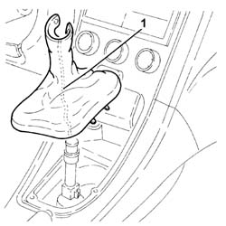
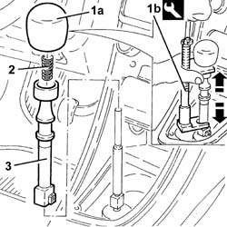
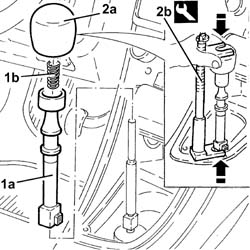
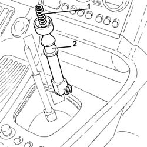

2125C18 reverse inhibitor - replace
- Path
- Procedures > 21 GEARBOX > 2125 MANUAL GEARBOX EXTERNAL CONTROLS > 2125C manual gearbox external control (cables) > 2125C18 reverse inhibitor - replace
- Kind
- repair procedure (removal / refitting; the operation number is the code)
- Applies to
- engines: 2.5 V6, 3.2 V6, 1.9 JTD 8v , 1.9 JTD 16v, 2.4 JTD 10v, 2.4 JTD 20v; all production periods
- Interactive page
- https://sloeber94.github.io/elrnDB-a156/en/#/3237969
Applies to: engines: 2.5 V6, 3.2 V6, 1.9 JTD 8v , 2.4 JTD 10v; all production periods
 Removing
Removing
 Refitting
Refitting1. Remove the gear lever boot.

Applies to: engines: 2.5 V6, 3.2 V6, 1.9 JTD 8v , 2.4 JTD 10v; all production periods
1. Remove the gear lever grip (1a) with the tool (1b) positioned as illustrated in the diagram and undo the bolt until it is completely removed.
 | Name | Country |
|---|---|---|
1b | Extractor | 1.870.668.000 |
2. Remove the spring.
3. Remove the reverse gear inhibitor.

Applies to: engines: 2.5 V6, 3.2 V6, 1.9 JTD 8v , 2.4 JTD 10v; all production periods
Refitting
Removing1. Place the reverse gear inhibitor (1a) and spring (1b) back in the housing.
2. Place the gear lever knob (2a) back in its housing using the tool (2b) positioned as illustrated in the diagram and adjust the bolt until the fitting is completed.
| Name | Country |
|---|---|---|
2b | Extractor | 1.870.668.000 |

Applies to: engines: 2.5 V6, 3.2 V6, 1.9 JTD 8v , 2.4 JTD 10v; all production periods
Place the gear lever boot back in its housing.
Applies to: engines: 1.9 JTD 16v; all production periods
Removing
RefittingProceed with removal 2125C24 gear lever knob - r + r .
1. Remove the spring.
2. Remove the reverse gear inhibitor.

Applies to: engines: 1.9 JTD 16v; all production periods
Refitting
RemovingPlace the reverse gear inhibitor back in its housing.
Place the spring back in its housing.
Proceed with refitting 2125C24 gear lever knob - r + r .
Applies to: engines: 2.4 JTD 20v; all production periods
Removing
RefittingProceed with removal 2125C24 gear lever knob - r + r .
1. Remove the spring.
2. Remove the reverse gear inhibitor.
Applies to: engines: 2.4 JTD 20v; all production periods
Refitting
RemovingPlace the reverse gear inhibitor back in its housing.
Place the spring back in its housing.
Proceed with refitting 2125C24 gear lever knob - r + r .